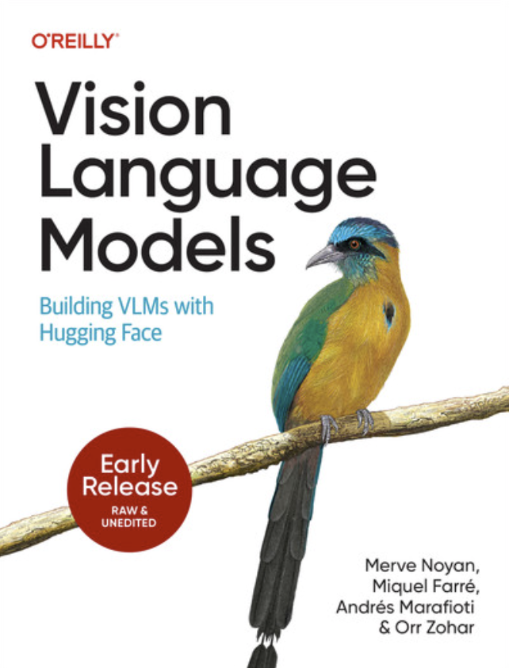

Building VLMs with Hugging Face
Today, you can take your phone out in a museum, snap a picture of a painting, and ask a model about the influences the artist drew on and what the piece might be trying to convey. The same model can watch the videos on your phone and give you quick summaries to help you find them later. Vision-language models make all of this possible by connecting visual perception and language. They have moved quickly from research prototypes to real products that people use every day.
But building new things with these models is harder than the user experience suggests. The field moves fast, new papers come out daily, and practical guidance is scattered across blog posts, library docs, and informal knowledge passed around at networking events. If you want to use, train, or fine-tune a VLM, it is not obvious how to choose the right architecture, how to curate your datasets, or how to deploy efficiently.
This book is our attempt to change that. It is the book we wished we had when multimodal work stopped being a research curiosity and became an engineering problem. We wrote it as a team that has spent years building, documenting, and shipping open-source multimodal systems at Hugging Face. We lead with code and concrete examples, and we use theory to explain why things work (or don't) rather than to impress.
Train, fine-tune, and deploy vision-language models in production with hands-on PyTorch and Hugging Face examples.
Understand core architectures, read VLM papers critically, and reason about design decisions in multimodal systems.
Go from API users to system designers — learn what is happening under the hood and build your own multimodal applications.
Traces the ideas that led to modern vision-language models and shows how images and text came to be modeled together.
Surveys captioning, visual question answering, reasoning, retrieval, document understanding, video understanding, and localization tasks.
Walks through training a small VLM from scratch — batching, packing, and how images and text are represented during training.
Moves from toy examples to real-world scale: sourcing, filtering, annotating, mixing, and packaging multimodal datasets.
Covers supervised fine-tuning, parameter-efficient adaptation, quantization-aware workflows, and alignment techniques.
Opens the model up — examines multimodal attention, fusion patterns, and modern VLM design blueprints.
Profiling, KV-cache behavior, attention optimizations, quantization, export, and serving frameworks.
How multimodal models handle OCR, document question answering, parsing, retrieval, and document-centric workflows.
Temporal modeling, video retrieval, Video-RAG, and practical fine-tuning considerations for video understanding.
Unified multimodal systems that understand and generate across text, images, audio, and video.
Agentic vision-language models and vision-language-action systems that move from passive understanding to decision-making and action.
For questions, comments, or requests to interview the authors, please reach out via our Hugging Face page.
To submit errata or report errors, please do so via the O'Reilly platform.